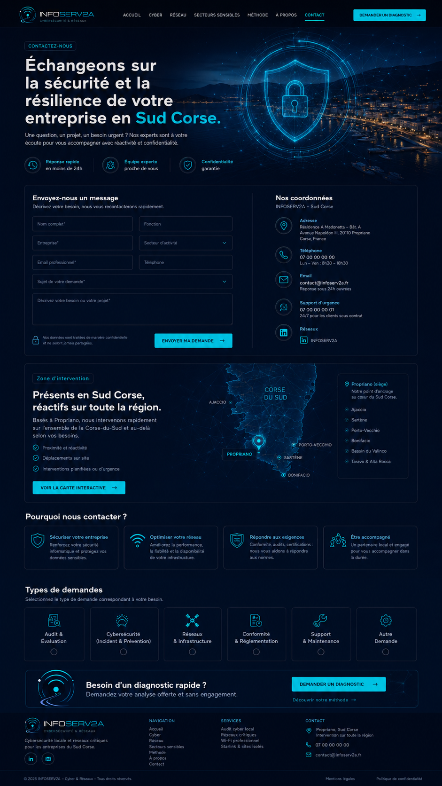

Sécuriser votre entreprise
Renforcez votre sécurité informatique et protégez vos données sensibles.

Contactez-nous
Une question, un projet, un besoin urgent ? Nos experts sont à votre écoute pour vous accompagner avec réactivité et confidentialité.
Zone d’intervention
Basés à Porto-Vecchio, nous intervenons rapidement sur l’ensemble de la Corse-du-Sud et au-delà selon vos besoins.
Pourquoi nous contacter ?
Renforcez votre sécurité informatique et protégez vos données sensibles.
Améliorez la performance, la fiabilité et la disponibilité de votre infrastructure.
Conformité, audits, certifications : nous vous aidons à répondre aux normes.
Un partenaire local et engagé pour vous accompagner dans la durée.
Types de demandes
Demandez votre analyse offerte et sans engagement.